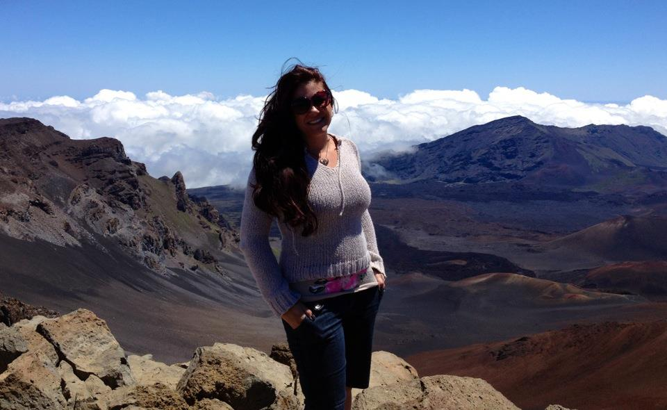

About Me
A highly motivated individual looking for a home in the world of code. I am true to myself in code as I am in life as an Artist with a Builders touch. My primary goal is to write elegant code which results in an eye catching and simplistic user experience.
In my personal life I am a thrill seeker who also enjoys a quiet life with my family and pets. A long-term personal goal of mine is to have my very own farm so that space is never the reason I turn down a rescue. I would love to be able to sponsor a resuce at some point in my life down the line to truly make a difference. Some of my favorite pastimes are riding my motorcycle and skydiving. Although some have said I am crazy, in my experience, nothing else in the world is more freeing.
How To: